"a high quality photo", no guidancePart A explores PixNerd-XXL-P16-T2I, a pretrained 512 x 512 text-to-image flow model. Velocity predictions are used for denoising, sampling, image editing, and optical illusions. No model training is required.
The model interpolates between Gaussian noise at \(t=0\) and a clean image at \(t=1\). It predicts the path velocity, which is integrated with Euler steps to generate images:
\( x_t = (1-t)\,\epsilon + t\,x_1 \)
\( v_\theta(x_t, t, c) \approx x_1 - \epsilon \)
\( x_{t+h} = x_t + h\, v_\theta(x_t, t, c) \)
| Setting | Value |
|---|---|
| Model | PixNerd-XXL-P16-T2I, 512 x 512 |
| Euler step size h | 0.02 |
| Classifier-free guidance weight w | 7, with the empty prompt "" as the unconditional prompt |
| Default prompt (Sections 1 to 2, and 3.1) | "a high quality photo" |
| Image for Sections 1.1 to 1.5 | a photo of a building |
Guidance convention: \(v_{\mathrm{cfg}}=v_c+w(v_c-v_u)\); \(w=0\) gives ordinary conditional sampling. This corresponds to lecture scale \(s=1+w\), so \(w=7\) equals \(s=8\).
One noise tensor was interpolated with a building photograph at \(t=0.25,0.50,0.75\). The image was cropped to 512 x 512 and normalized to \([-1,1]\). Larger \(t\) preserves more of the original.
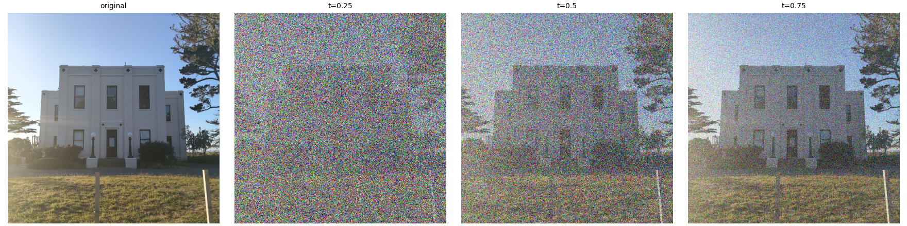
At \(t=0.25\), the building is barely visible; at \(t=0.50\), its outline emerges; and at \(t=0.75\), only light grain remains. The endpoints were verified: \(t=0\) returns noise and \(t=1\) returns the image.
As a classical baseline, the noisy image is divided by \(t\) to restore its amplitude, then Gaussian-blurred. This corrects scaling but cannot recover missing details:
\( \dfrac{x_t}{t} = x_1 + \dfrac{1-t}{t}\,\epsilon, \qquad \hat{x}_1^{\mathrm{blur}} = G_\sigma\!\left(\dfrac{x_t}{t}\right) \)
Gaussian blur was tested at \(\sigma\in\{1,2,4,8,16\}\), with kernel size \(6\sigma+1\). The lowest-MSE result was selected for each noise level. Because selection uses the clean reference, this is a best-case baseline.
| t | best \(\sigma\) |
|---|---|
| 0.25 | 8 |
| 0.50 | 4 |
| 0.75 | 2 |
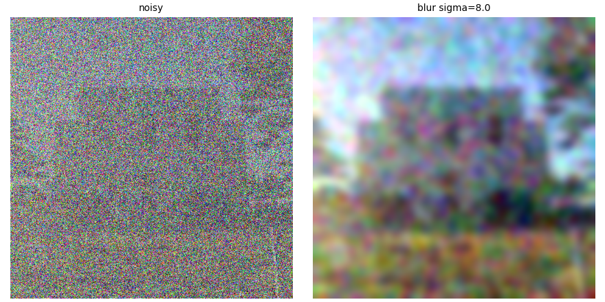
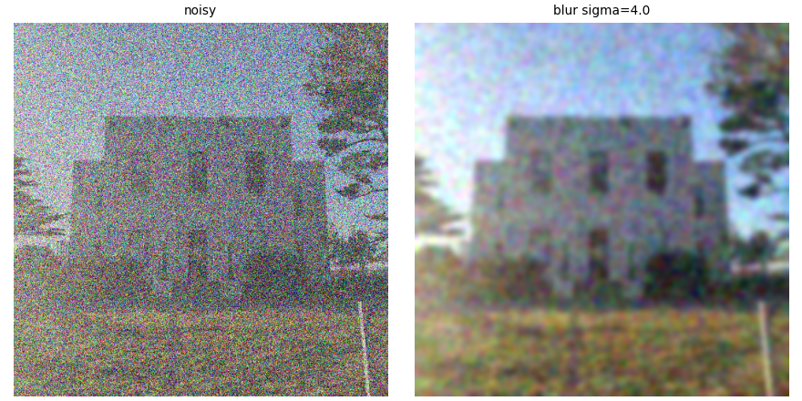
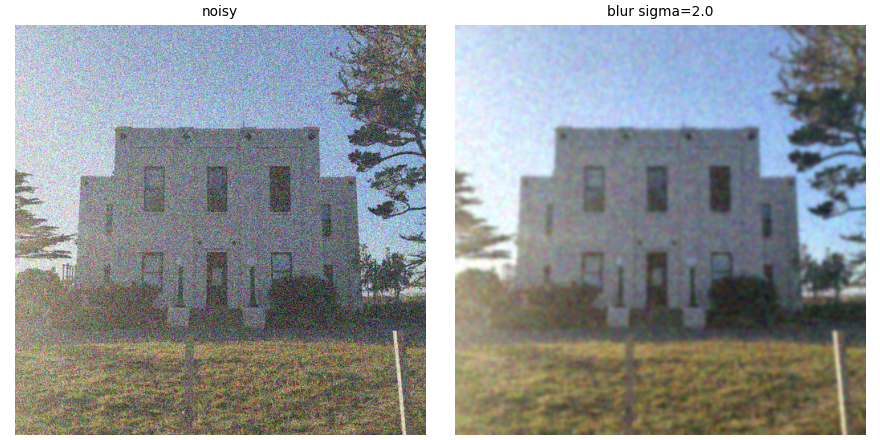
At \(t=0.25\), strong blur leaves only a vague building outline. At \(t=0.75\), mild blur reduces grain but softens windows, branches, and grass.
A single flow-model velocity prediction estimates the clean endpoint using the prompt "a high quality photo".
The model predicts velocity, not noise:
\( \hat{x}_1 = x_t + (1-t)\, v_\theta(x_t, t, c) \)
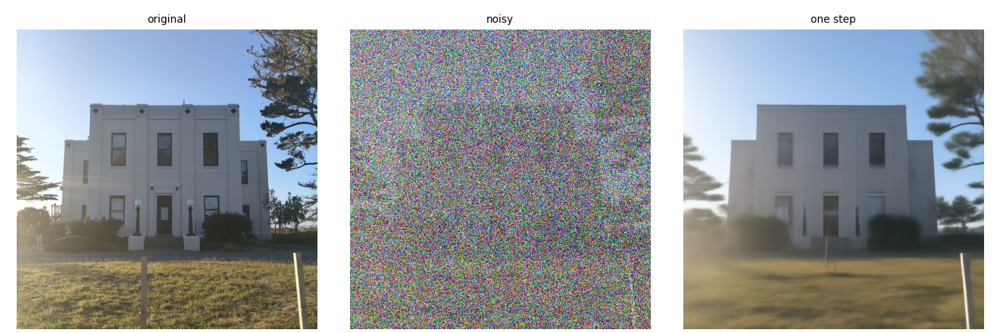
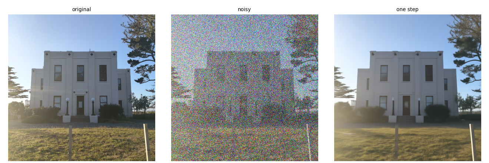
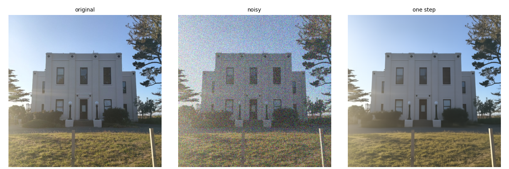
At \(t=0.25\), the building and trees reappear but fine textures are washed out. At \(t=0.50\), structural details sharpen; at \(t=0.75\), the estimate nearly matches the original. A single step cannot fully account for changing velocity along the sampling path.
The true velocity is \(v_{\mathrm{gt}}=x_1-\epsilon\), giving a target update \((1-t)v_{\mathrm{gt}}=x_1-x_t\). Per-pixel RMS error compares this with the predicted update across RGB channels before display scaling:
\( E_t = \sqrt{\mathrm{mean}_{\mathrm{RGB}}\!\left(\left[(1-t)(\hat{v}_t - v_{\mathrm{gt}})\right]^2\right)} \)
Predicted and target updates use a shared symmetric RGB scale; error heatmaps use a shared linear scale across all times.
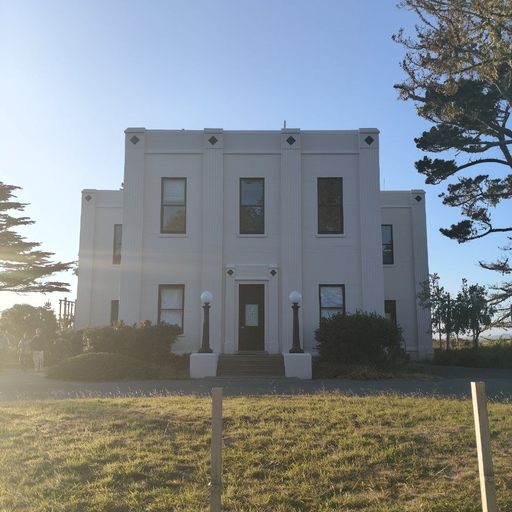
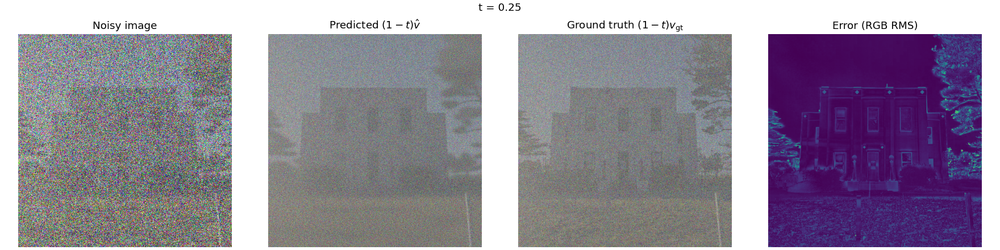
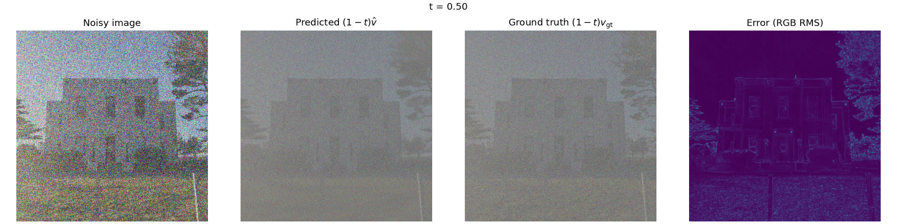
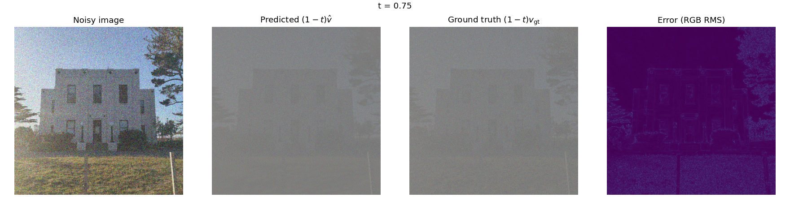
Predicted updates resemble the ground truth but are smoother. Errors are concentrated around building edges, windows, and branches, and diminish as \(t\) increases.
Euler sampling recomputes velocity after each update instead of extrapolating once. The step size is \(h=0.02\):
\( x_{t+h} = x_t + h\, v_\theta(x_t, t, c) \)
The final step is shortened to reach exactly \(t=1\). Constant-velocity tests passed for starting times 0, 0.5, and 0.93. From the saved \(t=0.5\) input, 25 updates produce the trajectory below.
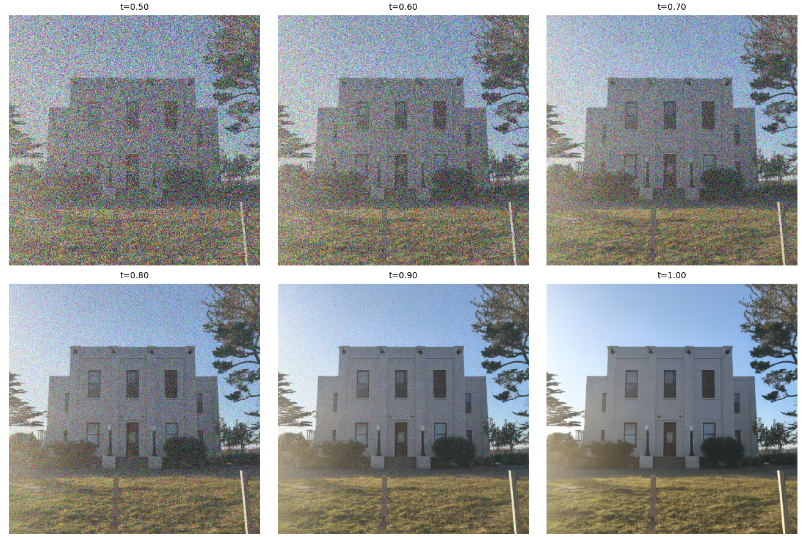
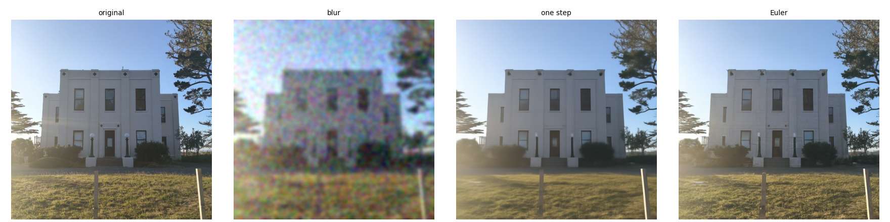
| Method (t = 0.5 input) | MSE to the original |
|---|---|
| Gaussian blur (\(\sigma\) = 4) | 0.0242 |
| One-step | 0.0097 |
| Euler (25 steps) | 0.0123 |
Gaussian blur loses the most detail. One-step denoising is smoother, while Euler recovers sharper textures. One-step has lower MSE (0.0097 versus 0.0123), but Euler's plausible details need not match the reference pixel for pixel.
Sampling from pure Gaussian noise at \(t=0\) produces five images using "a high quality photo" and no guidance (\(w=0\)).
"a high quality photo", no guidanceAll five samples are portraits, suggesting a strong bias toward faces. Quality varies across samples: some contain visible facial distortions, while others appear more natural.
Classifier-free guidance combines conditional and empty-prompt predictions at the same image and time. It strengthens prompt alignment, often at the expense of diversity:
\( v_{\mathrm{cfg}} = v_c + w\,(v_c - v_u) \)
At \(w=0\), CFG matches ordinary conditional sampling. For comparison, \(w=7\) and \(h=0.02\) were applied to the same five starting noises as Section 1.6.

CFG produces cleaner portraits and removes visible distortions, but the results become more similar: all five resemble centered studio headshots. Image quality improves while diversity decreases.
For image-to-image editing, a real image is interpolated with noise and sampled back to \(t=1\).
Smaller starting times allow larger edits. Settings: "a high quality photo", \(w=7\), \(h=0.02\), a shared noise sample, and starts at 0.02, 0.04, 0.06, 0.10, 0.14, 0.25, 0.50.

At \(t=0.02\), only a pale tower-like shape remains. The Campanile becomes recognizable by \(t=0.25\), with its clock and window details returning by \(t=0.50\).
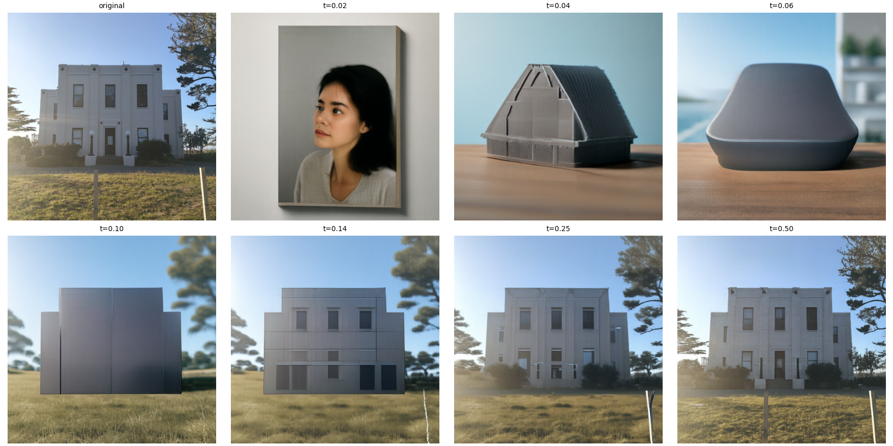
At low starting times, the building is replaced by unrelated objects. Its landscape and outline reappear around \(t=0.10\)-0.14; by \(t=0.25\), the building is recognizable.
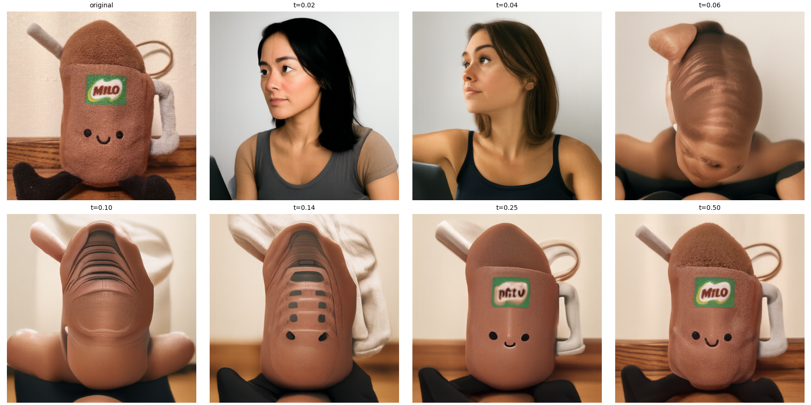
The plush becomes portraits or abstract shapes at low starting times. Its form returns at \(t=0.25\), and its logo and face are largely preserved by \(t=0.50\).
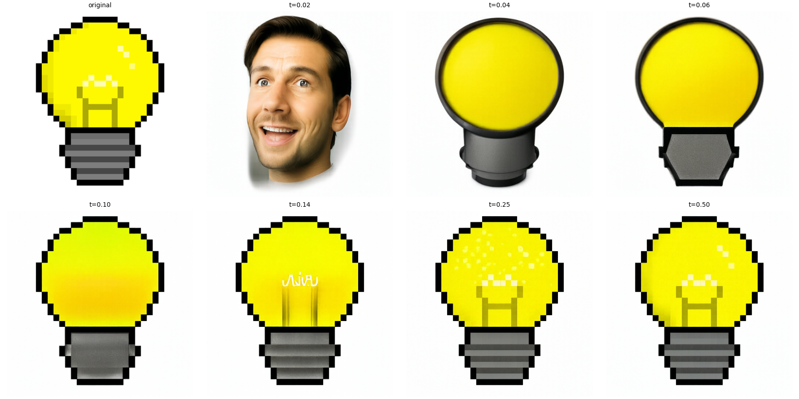
The downloaded pixel-art bulb becomes a face at \(t=0.02\), a glossy bulb at 0.04-0.06, and returns toward pixel art by 0.10-0.25.
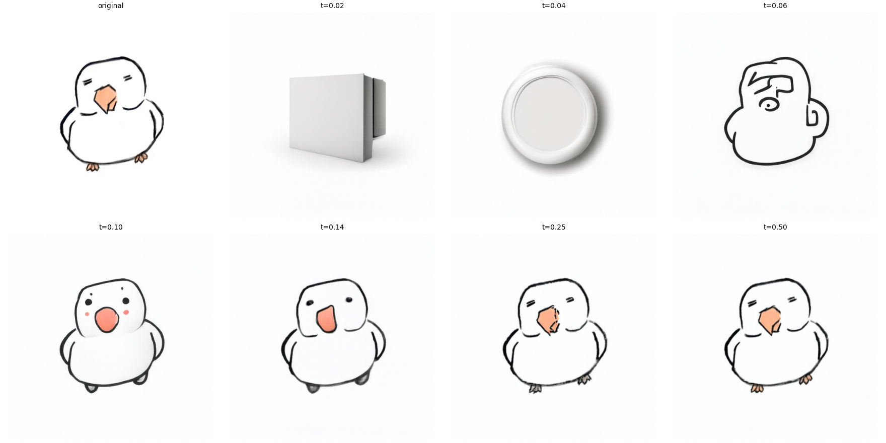
The parrot drawing becomes abstract white shapes at low starting times, then a softer cartoon bird at 0.10-0.14. Its original appearance largely returns by \(t=0.25\).
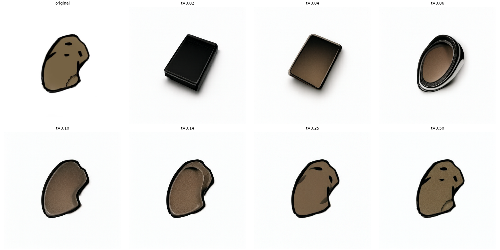
The potato drawing becomes unrelated rectangular or ring-shaped objects at low starting times. Its outline returns at 0.10-0.14 and its surface details by \(t=0.25\).
The same editing procedure is repeated with a custom text prompt for each image. All seven starting times are shown.
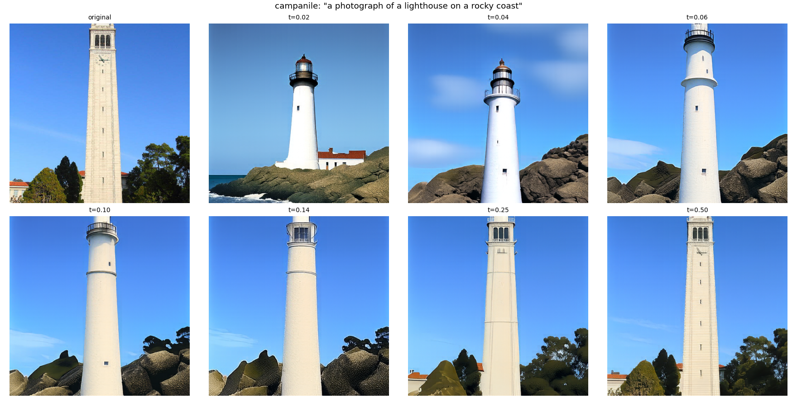
"a photograph of a lighthouse on a rocky coast"At low starting times, the Campanile becomes a lighthouse. Intermediate results combine the tower's proportions with a rocky coast; by \(t=0.50\), the original tower dominates.
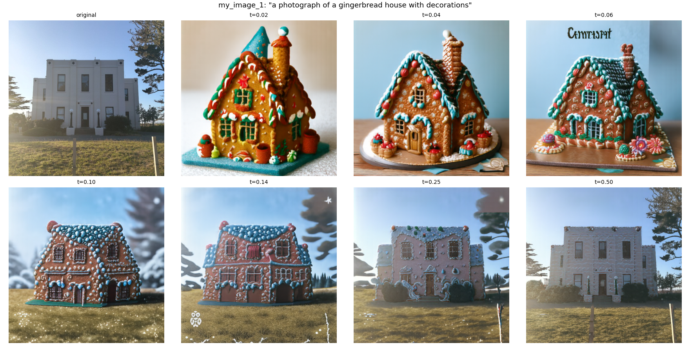
"a photograph of a gingerbread house with decorations"At \(t=0.02\)-0.06, the model generates a separate gingerbread house. Between 0.10 and 0.25, it transforms the original building while retaining the grass and sky. At 0.50, only faint frosting remains.
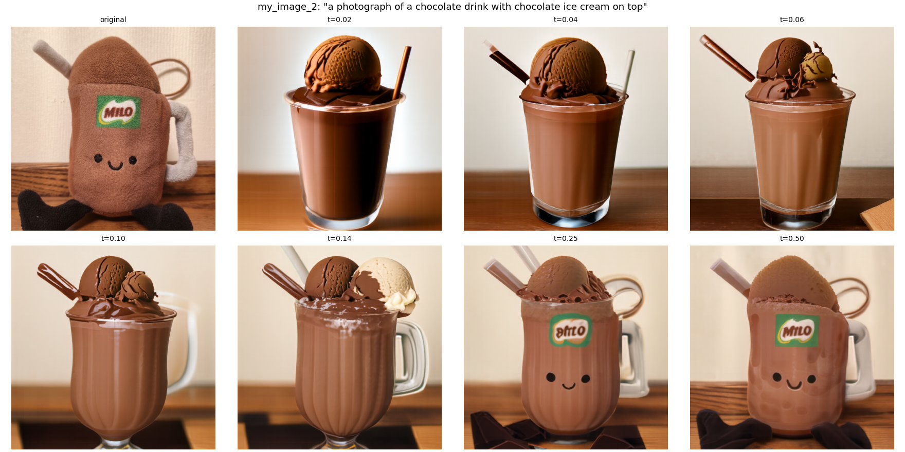
"a photograph of a chocolate drink with chocolate ice cream on top"At \(t=0.02\)-0.14, the plush becomes a chocolate drink with ice cream. At 0.25-0.50, the generated drink retains features of the MILO plush.
Across all three edits, low starting times favor the prompt, high starting times preserve the input, and intermediate times blend the two.
Visual anagrams show different subjects when rotated 180°. Each Euler step averages the velocity predicted for the upright prompt with the rotated-back velocity for the second prompt:
\( v_1 = \mathrm{CFG}(x_t, t, p_1) \)
\( v_2 = \mathrm{rotate}_{180}\big(\mathrm{CFG}(\mathrm{rotate}_{180}(x_t), t, p_2)\big) \)
\( v = (v_1 + v_2)/2 \)
Both results start from noise with \(w=7\) and \(h=0.02\). Each pair shows the generated image upright and rotated 180°.
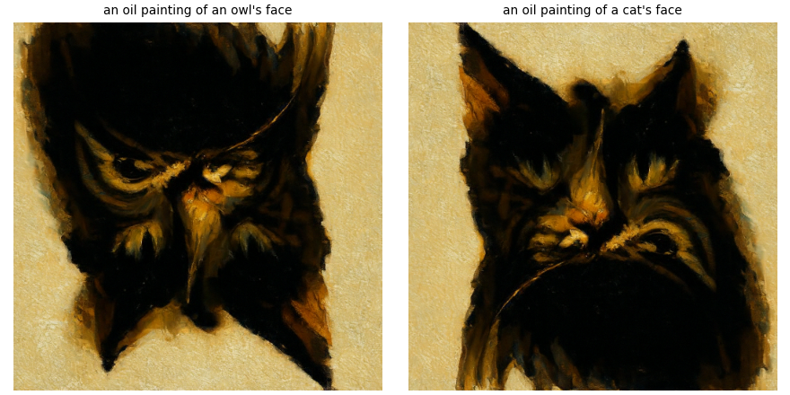
"an oil painting of an owl's face" upright, "an oil painting of a cat's face" rotatedThe owl and cat share eye and ear shapes that work in either orientation. Both are recognizable, although the owl view is darker.
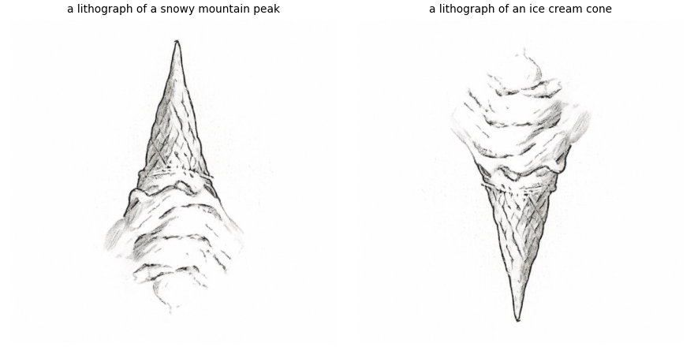
"a lithograph of a snowy mountain peak" upright, "a lithograph of an ice cream cone" rotatedThe mountain peak and ice-cream cone reuse a triangular silhouette. The cone is clear when rotated; the mountain retains a faint waffle-like texture.
Hybrid images combine low-frequency velocity from a distant-view prompt with high-frequency velocity from a close-view prompt. The low-pass filter uses Gaussian blur (kernel 265, \(\sigma=16\)) at 512 x 512:
\( v_1 = \mathrm{CFG}(x_t, t, p_{\mathrm{far}}) \)
\( v_2 = \mathrm{CFG}(x_t, t, p_{\mathrm{near}}) \)
\( v = f_{\mathrm{lowpass}}(v_1) + f_{\mathrm{highpass}}(v_2) \)
Each hybrid is shown at full size and reduced to 128 and 64 pixels to simulate distant viewing.
Far prompt: "a lithograph of a butterfly".
Close prompt: "a lithograph of flower garden".
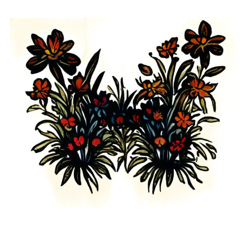
Up close, the image resembles a flower garden. At smaller sizes, its symmetric dark clusters suggest butterfly wings. This effect is subtle.
Far prompt: "a lithograph of a panda's face".
Close prompt: "a lithograph of a bamboo forest".
The close view shows a silhouetted bamboo forest. At 64 pixels, the tree clusters form the ears, eye patches, and nose of a panda.
Part B trains a single-step denoising UNet and then time-conditioned and class-conditioned flow-matching UNets on MNIST. Clean images are in \([0,1]\); noisy samples may fall outside that range.
| Setting | Part B1 (single-step denoiser) | Part B2 (flow matching) |
|---|---|---|
| Hidden dimension D | 128 | 64 |
| Batch size | 256 | 64 |
| Optimizer | Adam, lr 1e-4 | Adam, lr 1e-2, ExponentialLR with \( \gamma = 0.1^{1/10} \), stepped once per epoch |
| Epochs | 5 | 10 |
| Training data | MNIST training set only, with fresh noise drawn for every batch | |
| Sampling | one forward pass | Euler: 50 steps (time-conditioned), 300 steps (class-conditioned) |
| Guidance | none | \( \gamma = 5 \) with class dropout \( p_{\mathrm{uncond}} = 0.1 \) (class-conditioned only) |
Guidance convention: \(u=u_{\mathrm{uncond}}+\gamma(u_{\mathrm{cond}}-u_{\mathrm{uncond}})\), where \(\gamma=1\) is conditional sampling. Thus Part B's \(\gamma=5\) corresponds to Part A's \(w=4\).
The UNet contains two downsampling blocks, a 7 x 7 to 1 x 1 bottleneck, two upsampling blocks, and skip connections. Hidden-channel width is denoted by \(D\).
| Block | Layers | Output size |
|---|---|---|
| Conv | Conv2d (kernel 3, stride 1, padding 1), BatchNorm, GELU | H x W (unchanged) |
| DownConv | Conv2d (kernel 3, stride 2, padding 1), BatchNorm, GELU | H/2 x W/2 |
| UpConv | ConvTranspose2d (kernel 4, stride 2, padding 1), BatchNorm, GELU | 2H x 2W |
| Flatten | AvgPool2d (7), GELU | 7 x 7 to 1 x 1 |
| Unflatten | ConvTranspose2d (kernel 7, stride 7, padding 0), BatchNorm, GELU | 1 x 1 to 7 x 7 |
| ConvBlock | Conv, Conv | unchanged |
| DownBlock | DownConv, ConvBlock | H/2 x W/2 |
| UpBlock | UpConv, ConvBlock | 2H x 2W |
Encoder features have \(D\), \(D\), and \(2D\) channels at 28, 14, and 7 pixels. The decoder concatenates skip features and returns a single-channel 28 x 28 output.
A clean digit \(x\) is corrupted by Gaussian noise to form \(z\). The denoiser minimizes squared error between its prediction and the clean digit:
\( z = x + \sigma\,\epsilon, \qquad \epsilon \sim \mathcal{N}(0, I) \)
\( L = \mathbb{E}_{z,x}\,\| D_\theta(z) - x \|^2 \)
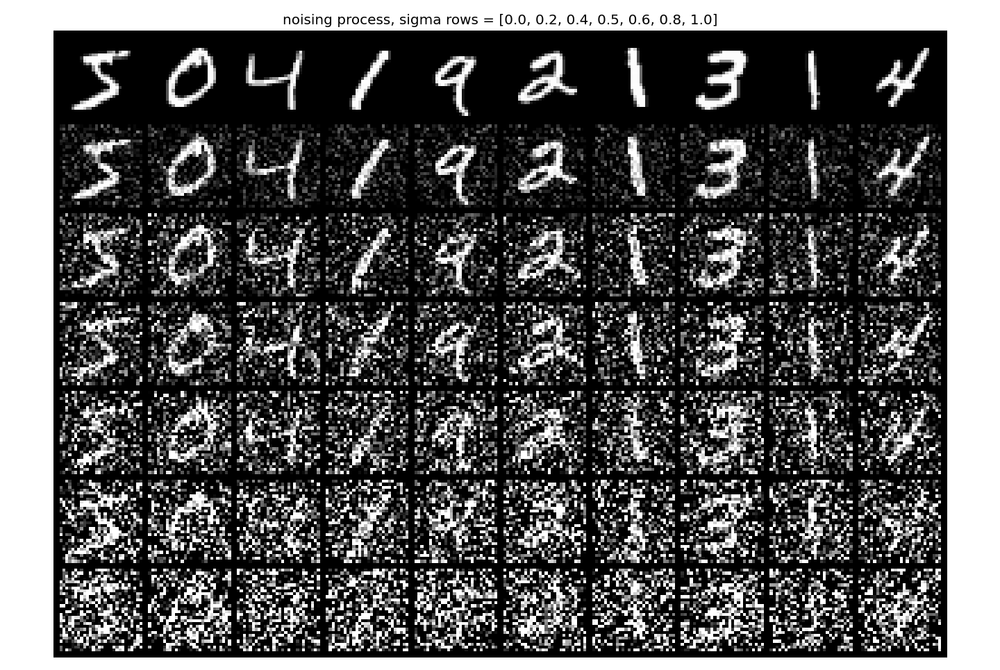
A UNet with \(D=128\) was trained at \(\sigma=0.5\) for five epochs (Adam, learning rate \(10^{-4}\), batch size 256), with fresh noise for each batch.
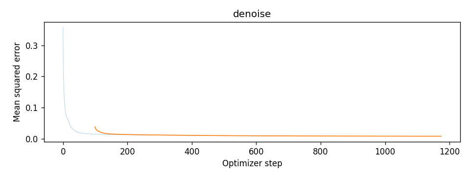
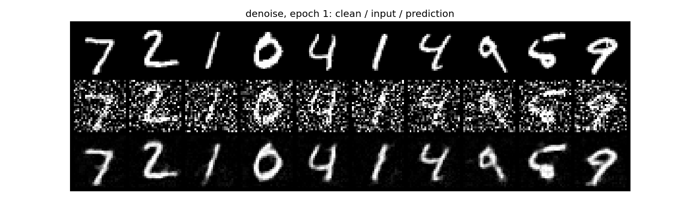
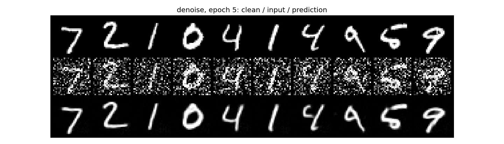
Loss decreased from about 0.36 to 0.008. Epoch 1 outputs are slightly blurry. By epoch 5, digit strokes are cleaner and background artifacts are reduced.
Generalization was tested by keeping one test digit fixed and varying \(\sigma\), although training used only \(\sigma=0.5\).
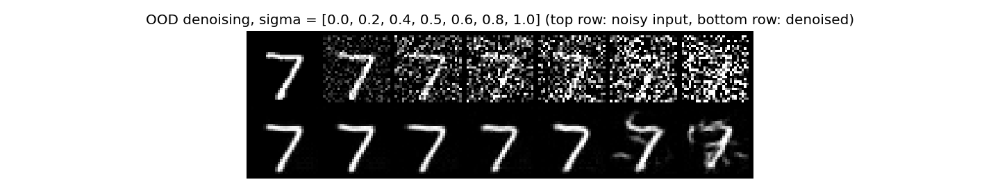
The digit remains recognizable through \(\sigma=0.6\); artifacts increase at 0.8, and most structure is lost at 1.0.
A separate UNet was trained for five epochs to map independent Gaussian noise to clean MNIST digits. Since noise carries no digit identity, this tests the limits of single-step generation.
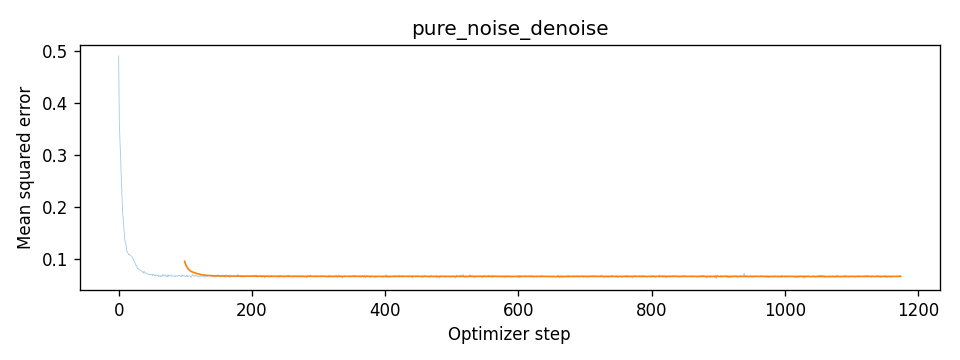
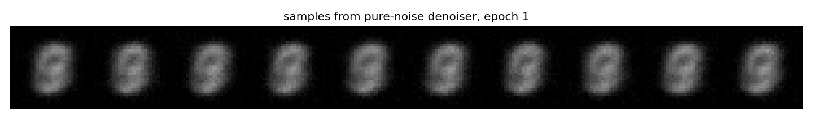
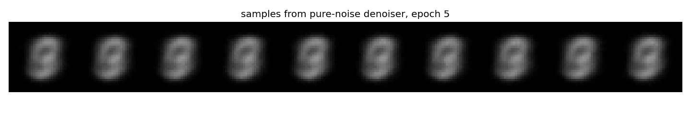
Outputs at epochs 1 and 5 are nearly identical blurry smudges. With independent noise and an MSE loss, the optimal prediction is the pixelwise mean, or centroid, of the training digits. This blends digit shapes rather than producing a distinct digit.
Flow matching addresses the limits of single-step generation by learning velocities at intermediate times between Gaussian noise \(x_0\) and clean images \(x_1\):
\( x_t = (1-t)\,x_0 + t\,x_1 \)
\( \dfrac{d x_t}{dt} = x_1 - x_0 \)
\( L = \mathbb{E}_{x_0, x_1, t}\,\| u_\theta(x_t, t) - (x_1 - x_0) \|^2 \)
An FCBlock (Linear, GELU, Linear) embeds time \(t\). Two embeddings multiply the unflattened bottleneck and first upsampling output, broadcasting across spatial dimensions. Training samples one time per image from a \(T=50\) grid.
Training used \(D=64\), batch size 64, Adam at \(10^{-2}\), and exponential learning-rate decay \(\gamma=0.1^{1/10}\) for ten epochs. Checkpoints were saved at epochs 1, 5, and 10.
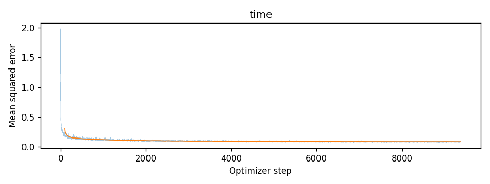
Generation begins with Gaussian noise and uses 50 Euler steps at times \(0,1/T,\ldots,(T-1)/T\):
\( x_{t + 1/T} = x_t + \dfrac{1}{T}\,u_\theta(x_t, t) \)
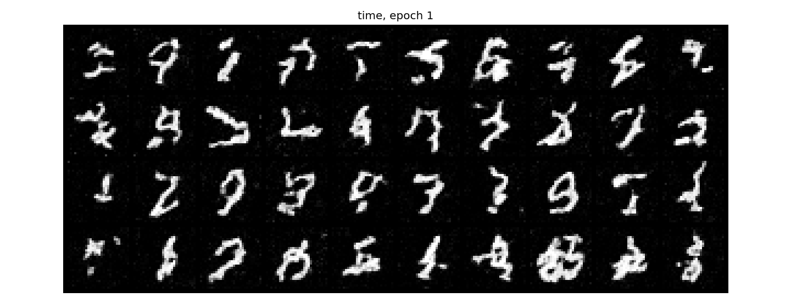
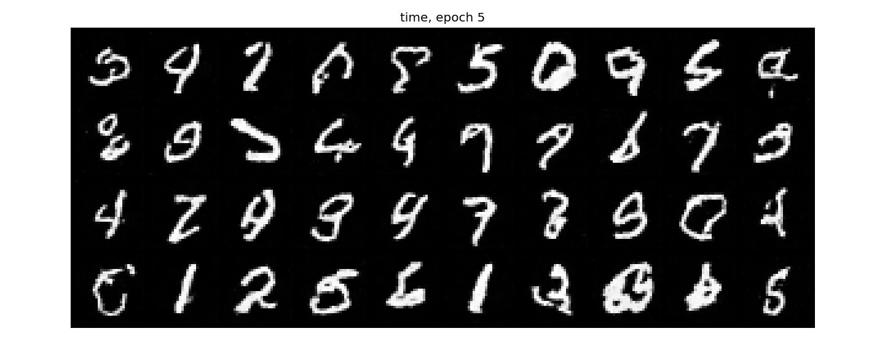
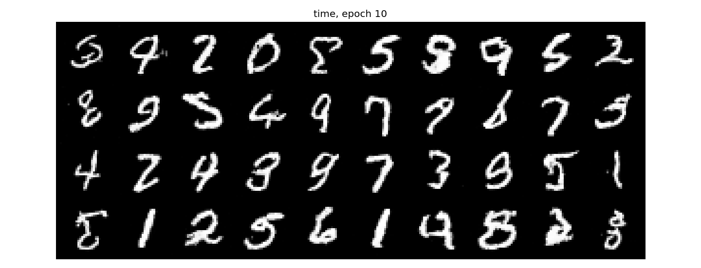
Using the same 40 noise samples, outputs progress from stroke fragments at epoch 1 to recognizable but imperfect digits at epoch 10. Time conditioning alone does not control digit identity.
Class conditioning adds a one-hot digit vector embedded by two FCBlocks. Class and time embeddings modulate the decoder as follows:
\( \text{unflatten} \leftarrow c_1 \cdot \text{unflatten} + t_1 \)
\( \text{up}_1 \leftarrow c_2 \cdot \text{up}_1 + t_2 \)
During training, class conditioning is dropped with probability 0.1, allowing the model to predict both conditional and unconditional flows. The class-conditioned sampler uses \(T=300\).
Training follows the same \(D=64\), batch size 64, ten-epoch Adam and decay schedule, with checkpoints at epochs 1, 5, and 10.
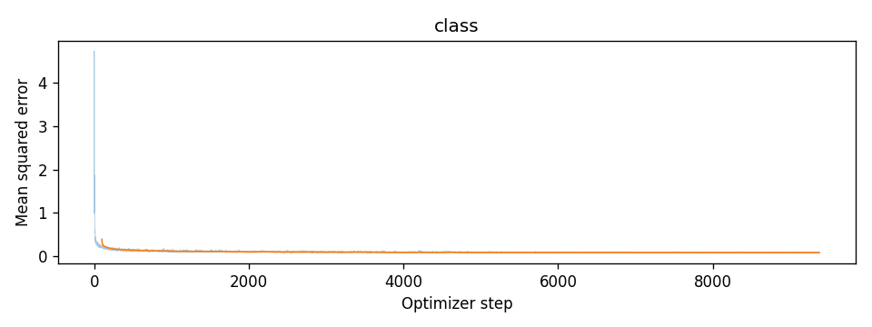
Sampling combines conditioned and unconditioned predictions with CFG scale \(\gamma=5\) over 300 Euler steps, generating four samples of each digit.
\( u = u_{\mathrm{uncond}} + \gamma\,(u_{\mathrm{cond}} - u_{\mathrm{uncond}}), \qquad x_{t + 1/T} = x_t + \dfrac{1}{T}\,u \)
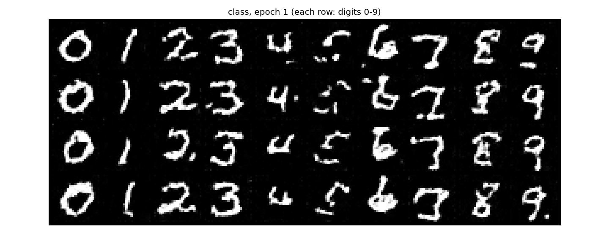
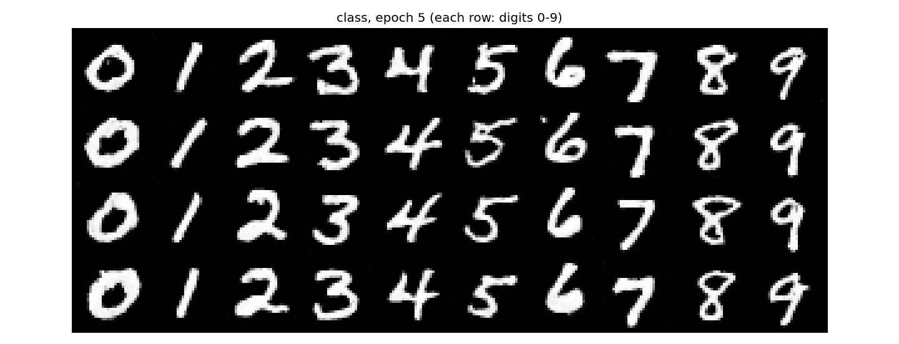
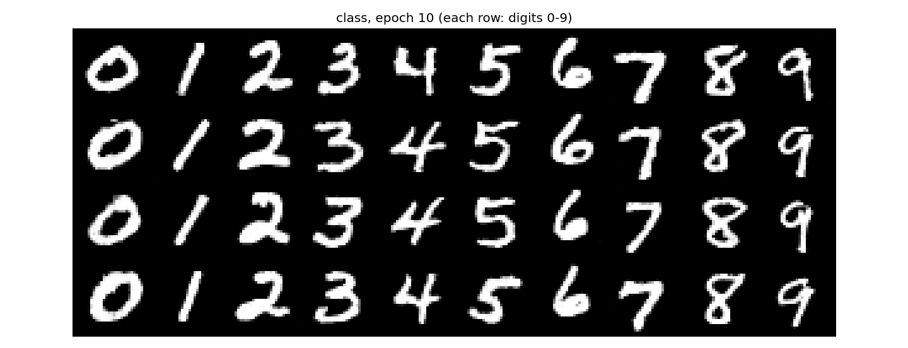
Class-conditioned digits are already recognizable at epoch 1 and become sharper by epochs 5 and 10. They are cleaner at epoch 5 than the time-only samples at epoch 10.
A second class-conditioned model was trained without a scheduler for ten epochs. To compensate for removing the decay schedule, the learning rate was fixed at \(10^{-3}\), approximately the scheduled run's final rate. Labels, sampling steps, and CFG scale were unchanged.
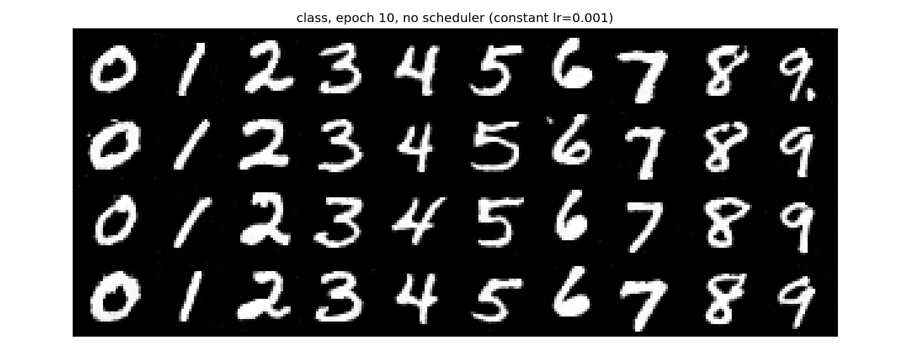
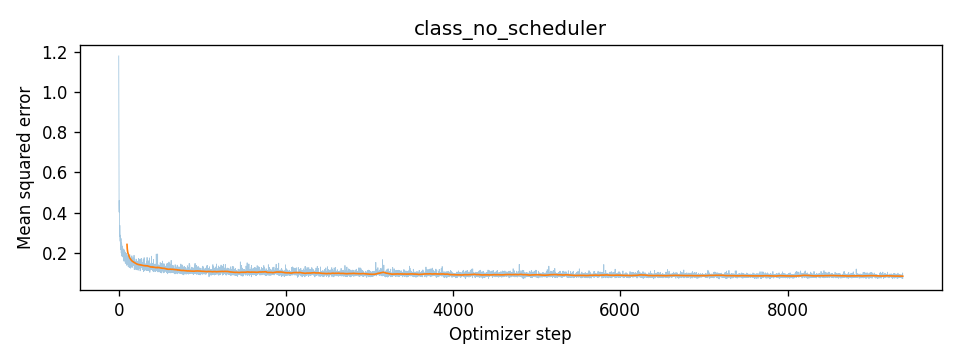
The scheduled model decays from \(10^{-2}\) toward \(10^{-3}\). Using a constant \(10^{-3}\) yields similar final loss and legible digits, although edges and loss curves are slightly noisier. This retains performance without a scheduler.
In Part A, I learned that visual quality and pixelwise MSE do not always agree. Iterative Euler sampling produced sharper details than one-step denoising, while CFG improved prompt alignment at the cost of diversity. I also learned how starting time affects the balance between editing an image and preserving its original content.
In Part B, I learned why single-step denoising of independent noise produces averaged digits instead of distinct samples. Flow matching demonstrated how learning velocities across time enables image generation, while class conditioning makes the results more reliable and controllable. The scheduler experiment also showed me that a simpler training setup can still achieve comparable results.